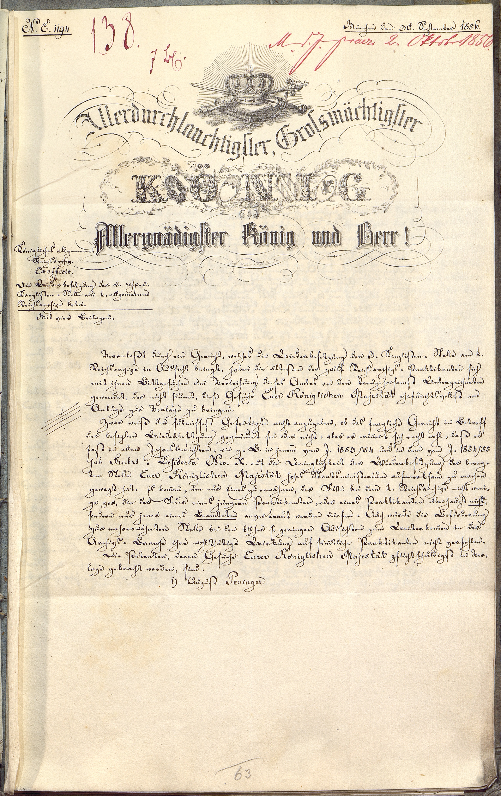

BayHStA, MInn, 41166



Kommentar
Editor: magdalena.weileder@textgrid.de
Archiv: BayHStA
Bestand: MInn
Signatur: 41166
Ort: München
Datum: 1856 September 30
Schlagwort: Akt
Schwierigkeitsgrad: leicht
Kurzbetreff:
Empfehlungsschreiben für die Besetzung einer Kanzlistenstelle im Reichsarchiv
Empfehlungsschreiben für die Besetzung einer Kanzlistenstelle im Reichsarchiv
Schreiberhände:
- Archivdirektor Rudhart (S1)
- unbekannter Schreiber, dunkelrote Tinte (S2)
- unbekannter Schreiber, rote Tinte (S3)
- gedruckte Formularteile (S4)
- spätere Paginierung mit Bleistift (S5)
Kommentar:
In einem Akt des Innenministeriums, die Kanzlistenstellen am Reichsarchiv betreffend, ist dieser Bericht des Archivdirektors Dr. Georg Thomas Rudhart an König Maximilian II. Joseph überliefert. Rudhart empfiehlt vier Reichsarchiv-Praktikanten für eine Kanzlistenstelle und beschreibt auf den weiteren, hier nicht abgebildeten Seiten die Fähigkeiten und finanziellen Umstände der Bewerber August Peringer, Franz Paul Fernbacher, Ludwig Schandein und Ludwig Rockinger. Als Begabtester sticht zwar der bereits als Rechtshistoriker promovierte und habilitierte Ludwig Rockinger hervor, dessen Ambitionen jedoch über die Tätigkeit eines Kanzlisten – „das Mundieren der Concepte [und] das Regestieren von Urkunden und Archivalien“ – hinausgingen. Schließlich plädiert Rudhart auch aus Gründen der Gerechtigkeit für den dienstältesten Praktikanten Fernbacher.
Die vier diagonalen Striche links neben dem Textblock weisen auf vier dem Schreiben beigefügte Anlagen hin („Anlagestriche“), in diesem Fall die Bewerbungsschreiben der Archivpraktikanten.
Das Blatt mit der vorgedruckten Darstellung von Krone, Schwert und Szepter auf einem Kissen sowie der reich verzierten Anrede stammt aus der lithographischen Anstalt Friedrich Wolf in München, wie einer kleinen, in humanistischer Minuskel gedruckten Signatur zu entnehmen ist. Die Anrede ist aus zwei verschiedenen Frakturschriften und einer aus Blattwerk gebildeten Kapitalis zusammengesetzt. Zwischen den Buchstaben des Wortes König sind ovale Wappenschilde dargestellt, die für die bayerischen Landesteile Pfalz, Franken, Rheinpfalz und Schwaben stehen.
Der Archivdirektor Rudhart schreibt eine sehr sorgfältige und regelmäßige Kurrent mit fast senkrecht stehenden Schäften und ausgeprägten Haar- und Schattenstrichen insbesondere bei den Großbuchstaben. Für lateinische Wörter, die Anrede an den König und Nachnamen verwendet er eine ebenso sorgfältige humanistische Kursive.
In einem Akt des Innenministeriums, die Kanzlistenstellen am Reichsarchiv betreffend, ist dieser Bericht des Archivdirektors Dr. Georg Thomas Rudhart an König Maximilian II. Joseph überliefert. Rudhart empfiehlt vier Reichsarchiv-Praktikanten für eine Kanzlistenstelle und beschreibt auf den weiteren, hier nicht abgebildeten Seiten die Fähigkeiten und finanziellen Umstände der Bewerber August Peringer, Franz Paul Fernbacher, Ludwig Schandein und Ludwig Rockinger. Als Begabtester sticht zwar der bereits als Rechtshistoriker promovierte und habilitierte Ludwig Rockinger hervor, dessen Ambitionen jedoch über die Tätigkeit eines Kanzlisten – „das Mundieren der Concepte [und] das Regestieren von Urkunden und Archivalien“ – hinausgingen. Schließlich plädiert Rudhart auch aus Gründen der Gerechtigkeit für den dienstältesten Praktikanten Fernbacher.
Die vier diagonalen Striche links neben dem Textblock weisen auf vier dem Schreiben beigefügte Anlagen hin („Anlagestriche“), in diesem Fall die Bewerbungsschreiben der Archivpraktikanten.
Das Blatt mit der vorgedruckten Darstellung von Krone, Schwert und Szepter auf einem Kissen sowie der reich verzierten Anrede stammt aus der lithographischen Anstalt Friedrich Wolf in München, wie einer kleinen, in humanistischer Minuskel gedruckten Signatur zu entnehmen ist. Die Anrede ist aus zwei verschiedenen Frakturschriften und einer aus Blattwerk gebildeten Kapitalis zusammengesetzt. Zwischen den Buchstaben des Wortes König sind ovale Wappenschilde dargestellt, die für die bayerischen Landesteile Pfalz, Franken, Rheinpfalz und Schwaben stehen.
Der Archivdirektor Rudhart schreibt eine sehr sorgfältige und regelmäßige Kurrent mit fast senkrecht stehenden Schäften und ausgeprägten Haar- und Schattenstrichen insbesondere bei den Großbuchstaben. Für lateinische Wörter, die Anrede an den König und Nachnamen verwendet er eine ebenso sorgfältige humanistische Kursive.
Entzifferung
(Absatz Beginn)
1 (Archivdirektor Rudhart:) N(umerus) E(xhibiti)(Wechsel des Schriftsystems) 1194(unbekannter Schreiber, dunkelrote Tinte:) 138.(Archivdirektor Rudhart:) München den 30. September 1856.
2 (unbekannter Schreiber, dunkelrote Tinte:) 7 B(latt)(unbekannter Schreiber, rote Tinte:) M(inisterium)d(es)J(nnern)praes(entatum)(Wechsel des Schriftsystems) 2. Oktober1856.
3 (gedruckte Formularteile:) Allerdurchlauchtigster, Grossmächtigster
4 K Ö N I G
5 Allergnädigster König und Herr!
6 Lith(ographische) Anst(alt) F(riedrich) Wolf München
7 (Archivdirektor Rudhart:) Königliches allgemeines
8 Reichsarchiv.
9 Ex officio.(Wechsel des Schriftsystems)
10 Die Wiederbesetzung der 2. resp(ective)(Wechsel des Schriftsystems) 3.
11 Kanzlisten = Stelle am k(öniglichen) allgemeinen
12 Reichsarchive betr(effend)
13 Mit vier Beilagen.
14 Veranlaßt durch ein Gerücht, welches die Wiederbesetzung der 3. Kanzlisten= Stelle am k(öniglichen)
15 Reichsarchive in Aussicht bringt, haben die ältesten der zwölf Reichsarchivs= Praktikanten sich
16 mit ihren Bittgesuchen um Verleihung dieses Amtes an den treugehorsamst Unterzeichneten
17 gewendet, der nicht säumt, diese Gesuche Euer Königlichen Majestät(Wechsel des Schriftsystems) ehrfurchtsvollst im
18 Anbuge zur Vorlage zu bringen.
19 Zwar weiß der submissest Gefertigte nicht anzugeben, ob das fragliche Gerücht in Betreff
20 der besagten Wiederbesetzung gegründet sei oder nicht: aber er erin(n)ert sich recht wohl, daß er
21 fast in allen Jahresberichten, wie z(um) B(eispiel) in jenem vom J(ahre) 1853/54 und in dem vom J(ahre) 1854/55
22 sub Rubro „ Desideria“ N(ume)ro X.(Wechsel des Schriftsystems) auf die Dringlichkeit der Wiederbesetzung der bereg-
23 ten Stelle Euer Königlichen Majestät(Wechsel des Schriftsystems) hohes Staatsministerium aufmerksam zu machen
24 gewagt hat. Es kom(m)en, um nur Eines zu erwähnen, der Fälle bei dem k(öniglichen) Reichsarchive nicht weni-
25 ge vor, die der Feder eines jüngern Praktikanten, oder eines Praktikanten überhaupt nicht,
26 sondern nur jener eines Beamteten anvertraut werden dürfen. Auch würde die Beförderung
27 zur mehrerwähnten Stelle bei den bisher so geringen Aussichten zum Weiterkom(m)en in der
28 Archivs= Branche ihre wohlthätige Wirkung auf säm(m)tliche Praktikanten nicht verfehlen.
29 Die Petenten, deren Gesuche Eurer Königlichen Majestät(Wechsel des Schriftsystems) pflichtschuldigst in Vor-
30 lage gebracht werden, sind:
31 1) August Peringer(Wechsel des Schriftsystems)
32 (spätere Paginierung mit Bleistift:) 63
(Absatz Ende)
Transkription
(Absatz Beginn)
1 (Archivdirektor Rudhart:) Numerus Exhibiti(Wechsel des Schriftsystems) 1194 (unbekannter Schreiber, dunkelrote Tinte:) 138. (Archivdirektor Rudhart:) München, den 30. September 1856.
2 (unbekannter Schreiber, dunkelrote Tinte:) 7 Blatt (unbekannter Schreiber, rote Tinte:) Ministerium des Innern, praesentatum(Wechsel des Schriftsystems) 2. Oktober1856.
3 (gedruckte Formularteile:) Allerdurchlauchtigster, grossmächtigster
4 König,
5 allergnädigster König und Herr!
6 Lithographische Anstalt Friedrich Wolf, München
7 (Archivdirektor Rudhart:) Königliches allgemeines
8 Reichsarchiv.
9 Ex officio.(Wechsel des Schriftsystems)
10 Die Wiederbesetzung der 2. respective(Wechsel des Schriftsystems) 3.
11 Kanzlistenstelle am königlichen allgemeinen
12 Reichsarchive betreffend.
13 Mit vier Beilagen.
14 Veranlaßt durch ein Gerücht, welches die Wiederbesetzung der 3. Kanzlistenstelle am königlichen
15 Reichsarchive in Aussicht bringt, haben die ältesten der zwölf Reichsarchivspraktikanten sich
16 mit ihren Bittgesuchen um Verleihung dieses Amtes an den treugehorsamst Unterzeichneten
17 gewendet, der nicht säumt, diese Gesuche Euer Königlichen Majestät(Wechsel des Schriftsystems) ehrfurchtsvollst im
18 Anbuge zur Vorlage zu bringen.
19 Zwar weiß der submissest Gefertigte nicht anzugeben, ob das fragliche Gerücht in Betreff
20 der besagten Wiederbesetzung gegründet sei oder nicht: aber er erinnert sich recht wohl, daß er
21 fast in allen Jahresberichten, wie zum Beispiel in jenem vom Jahre 1853/54 und in dem vom Jahre 1854/55
22 sub Rubro „Desideria“ Numero X(Wechsel des Schriftsystems) auf die Dringlichkeit der Wiederbesetzung der bereg-
23 ten Stelle Euer Königlichen Majestät(Wechsel des Schriftsystems) hohes Staatsministerium aufmerksam zu machen
24 gewagt hat. Es kommen, um nur Eines zu erwähnen, der Fälle bei dem königlichen Reichsarchive nicht weni-
25 ge vor, die der Feder eines jüngern Praktikanten, oder eines Praktikanten überhaupt nicht,
26 sondern nur jener eines Beamteten anvertraut werden dürfen. Auch würde die Beförderung
27 zur mehrerwähnten Stelle bei den bisher so geringen Aussichten zum Weiterkommen in der
28 Archivsbranche ihre wohlthätige Wirkung auf sämmtliche Praktikanten nicht verfehlen.
29 Die Petenten, deren Gesuche Eurer Königlichen Majestät(Wechsel des Schriftsystems) pflichtschuldigst in Vor-
30 lage gebracht werden, sind:
31 1) August Peringer(Wechsel des Schriftsystems)
32 (spätere Paginierung mit Bleistift:) 63
(Absatz Ende)